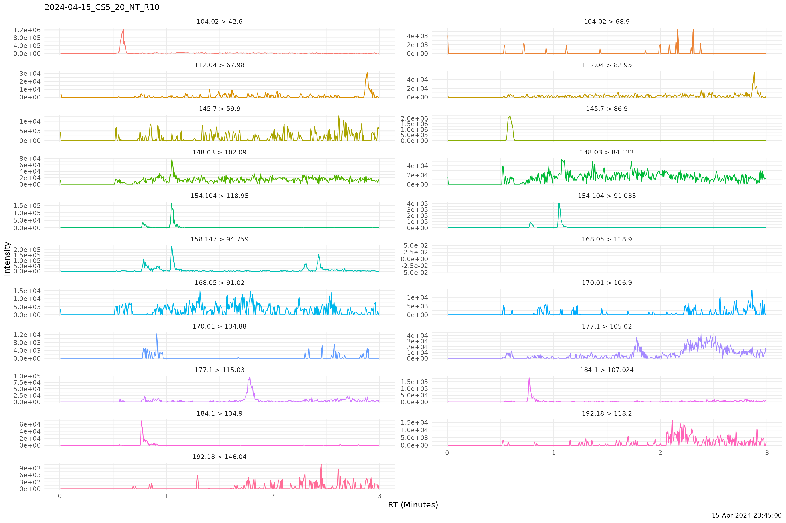

Visualize Chromatograms
Omar Elashkar
Source:vignettes/visualizeChromatograms.Rmd
visualizeChromatograms.RmdWe will load Waters .raw Chromatograms using
read_chrom(). We need to have method specified in the
method argument. This can be done or edited using the
interface in study_app().
#> [1] TRUE
chrompath <- system.file("extdata", "waters_raw_ex", package="PKbioanalysis")
chroms <- read_chrom(chrompath, method = 1)
#>
#> ── Reading Waters Raw Files
#> Downloading uv...Done!
#> ℹ Found 7 raw files
#> → Loading
#> → loading /tmp/Rtmp2kmHZi/temp_libpath1cf94490a741/PKbioanalysis/extdata/waters…
#> → loading /tmp/Rtmp2kmHZi/temp_libpath1cf94490a741/PKbioanalysis/extdata/waters…
#> → loading /tmp/Rtmp2kmHZi/temp_libpath1cf94490a741/PKbioanalysis/extdata/waters…
#> → loading /tmp/Rtmp2kmHZi/temp_libpath1cf94490a741/PKbioanalysis/extdata/waters…
#> → loading /tmp/Rtmp2kmHZi/temp_libpath1cf94490a741/PKbioanalysis/extdata/waters…
#> → loading /tmp/Rtmp2kmHZi/temp_libpath1cf94490a741/PKbioanalysis/extdata/waters…
#> → loading /tmp/Rtmp2kmHZi/temp_libpath1cf94490a741/PKbioanalysis/extdata/waters…
#> ✔ Loaded 7 chromatograms
#> → loading /tmp/Rtmp2kmHZi/temp_libpath1cf94490a741/PKbioanalysis/extdata/waters…
get_sample_names(chroms)
#> sample sample_id
#> 1 2024-04-15_DB_NT_R1 1
#> 2 2024-04-15_CS4_10_NT_R9 2
#> 3 2024-04-15_CS5_20_NT_R10 3
#> 4 2024-04-15_CS6_50_NT_R11 4
#> 5 2024-04-15_CS3_5_NT_R8 5
#> 6 2024-04-15_CS2_2_NT_R7 6
#> 7 2024-04-15_CS1_1_NT_R6 7
plot_chrom(chroms, sample_id = 3, ncol = 2)
More interactive features for integration and visualization are to be added in the future.